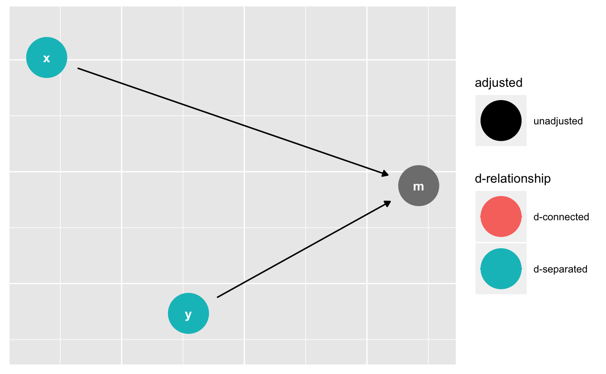
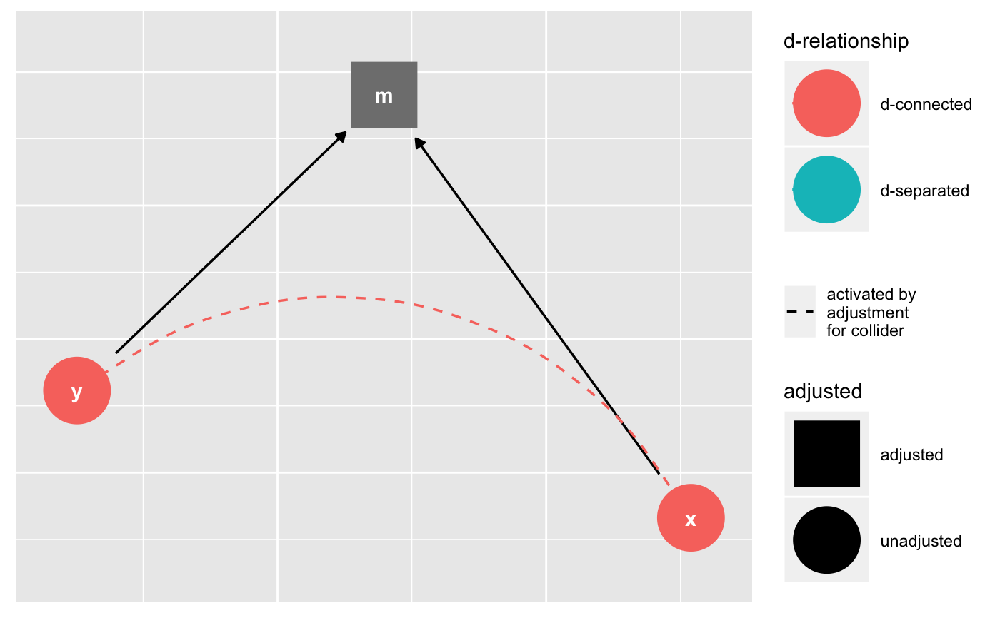
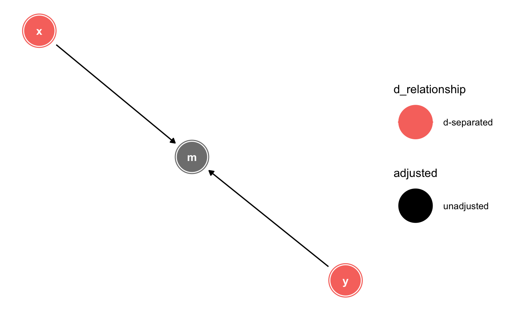
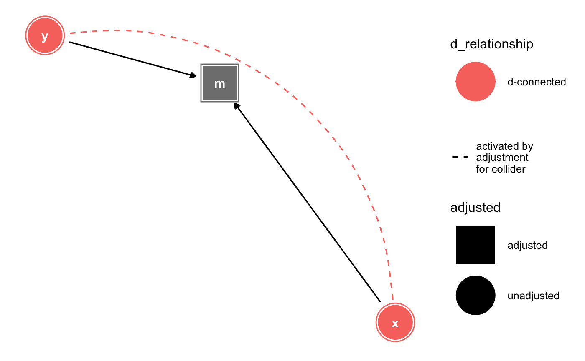
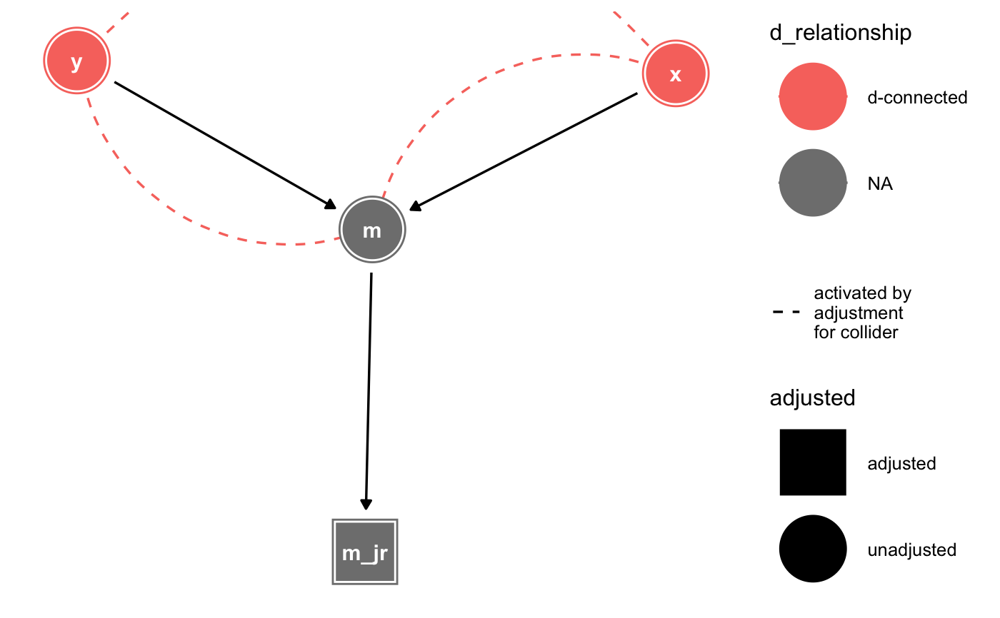

D-separation is a key concept in causal structural models. Variables are
d-separated if there are no open paths between them. The node_d*()
functions label variables as d-connected or d-separated. The
ggdag_d*() functions plot the results. The *_dconnected(),
*_dseparated(), and *_drelationship() functions essentially
produce the same output and are just different ways of thinking about the
relationship. See dagitty::dseparated() for details.
node_dconnected(.tdy_dag, from = NULL, to = NULL, controlling_for = NULL, as_factor = TRUE, ...) node_dseparated(.tdy_dag, from = NULL, to = NULL, controlling_for = NULL, as_factor = TRUE) node_drelationship(.tdy_dag, from = NULL, to = NULL, controlling_for = NULL, as_factor = TRUE) ggdag_drelationship(.tdy_dag, from = NULL, to = NULL, controlling_for = NULL, ..., edge_type = "link_arc", node_size = 16, text_size = 3.88, label_size = text_size, text_col = "white", label_col = text_col, node = TRUE, stylized = TRUE, text = TRUE, use_labels = NULL, collider_lines = TRUE) ggdag_dseparated(.tdy_dag, from = NULL, to = NULL, controlling_for = NULL, ..., edge_type = "link_arc", node_size = 16, text_size = 3.88, label_size = text_size, text_col = "white", label_col = text_col, node = TRUE, stylized = TRUE, text = TRUE, use_labels = NULL, collider_lines = TRUE) ggdag_dconnected(.tdy_dag, from = NULL, to = NULL, controlling_for = NULL, ..., edge_type = "link_arc", node_size = 16, text_size = 3.88, label_size = text_size, text_col = "white", label_col = text_col, node = TRUE, stylized = TRUE, text = TRUE, use_labels = NULL, collider_lines = TRUE)
| .tdy_dag | input graph, an object of class |
|---|---|
| from | a character vector, the starting variable (must by in DAG). If
|
| to | a character vector, the ending variable (must by in DAG). If
|
| controlling_for | a character vector, variables in the DAG to control for. |
| as_factor | logical. Should the |
| ... | additional arguments passed to |
| edge_type | a character vector, the edge geom to use. One of: "link_arc", which accounts for directed and bidirected edges, "link", "arc", or "diagonal" |
| node_size | size of DAG node |
| text_size | size of DAG text |
| label_size | size of label text |
| text_col | color of DAG text |
| label_col | color of label text |
| node | logical. Should nodes be included in the DAG? |
| stylized | logical. Should DAG nodes be stylized? If so, use
|
| text | logical. Should text be included in the DAG? |
| use_labels | a string. Variable to use for |
| collider_lines | logical. Should the plot show paths activated by adjusting for a collider? |
a tidy_dagitty with a d_relationship column for
variable D relationship or a ggplot
dag %>% ggdag_drelationship("x", "y", controlling_for = "m")dag %>% node_dseparated("x", "y") %>% ggplot(aes(x = x, y = y, xend = xend, yend = yend, shape = adjusted, col = d_relationship)) + geom_dag_edges() + geom_dag_collider_edges() + geom_dag_node() + geom_dag_text(col = "white") + theme_dag() + scale_dag()dag %>% node_dconnected("x", "y", controlling_for = "m") %>% ggplot(aes(x = x, y = y, xend = xend, yend = yend, shape = adjusted, col = d_relationship)) + geom_dag_edges() + geom_dag_collider_edges() + geom_dag_node() + geom_dag_text(col = "white") + theme_dag() + scale_dag()dagify(m ~ x + y, m_jr ~ m) %>% tidy_dagitty(layout = "nicely") %>% node_dconnected("x", "y", controlling_for = "m_jr") %>% ggplot(aes(x = x, y = y, xend = xend, yend = yend, shape = adjusted, col = d_relationship)) + geom_dag_edges() + geom_dag_collider_edges() + geom_dag_node() + geom_dag_text(col = "white") + theme_dag() + scale_dag()